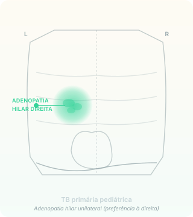
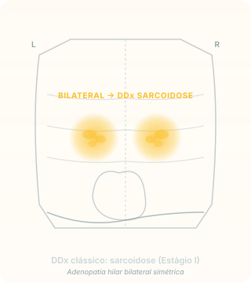

A primeira vez que o bacilo encontra um hospedeiro virgem, ele encontra uma criança. E o que ela mostra no Rx é tão característico que vira pergunta de prova: unilateral. Se for bilateral, pense em outra coisa.
TB primária é, por definição, a doença que se instala no primeiro contato com o bacilo — quando o hospedeiro ainda não tem memória imunológica organizada. Esse cenário é estatisticamente dominante na infância porque, em região endêmica, a probabilidade de "primeiro contato" decresce com a idade: quanto mais velho, mais provável que já tenha sido exposto antes (e formado granuloma latente).
A apresentação clínica é pneumonia arrastada: tosse persistente + febre que não cedem com antibioticoterapia comum — amoxicilina, por exemplo. O ponto de inflexão clínica vem após 7 a 14 dias sem resposta ao antibiótico empírico. Esse é o momento em que o pediatra deve mudar o eixo da hipótese e considerar TB.
Mecanismo
Por que a criança é paucibacilar
A criança com TB primária raramente é fonte de transmissão. Três razões mecânicas:
Carga bacilar baixa: a doença está em fase inicial, sem cavitação que multiplica bacilos
Dificuldade de expectorar: criança pequena não consegue produzir escarro adequado, então o que ela elimina pra o ar é pouco
Volume expiratório menor: pulmão pequeno = aerossol disperso em menor volume e alcance
Por isso o diagnóstico em criança raramente sai por baciloscopia de escarro — sai por escore clínico CHILD (Página 9) + lavado gástrico (que coleta o bacilo deglutido durante o sono noturno).

Padrão clássico da TB primária pediátrica — adenopatia hilar unilateral (predomínio à direita pela drenagem linfática preferencial) com infiltrado adjacente tênue.Armadilha clássica de prova
O lado faz toda diferença
Adenopatia hilar
Pensar primeiro em…
UNILATERAL (geralmente direita)
TB primária
BILATERAL
Sarcoidose (Estágio I)
Aprofundamento opcional — outros DDx pra adenopatia hilar bilateral:
Linfoma (especialmente Hodgkin) — sintomas B associados (febre, sudorese, perda de peso, prurido)
Histoplasmose disseminada/aguda — exposição a caverna/morcego/galinheiro (assunto de A6)
Silicose — exposição ocupacional (mineração); calcificações em "casca de ovo" nos linfonodos hilares
Berilliose — exposição ocupacional indústria de berílio
Em prova MED, a armadilha quase sempre é TB × sarcoidose. O outro DDx aparece em contextos epidemiológicos específicos (exposição declarada no enunciado).

DDx clássico — adenopatia hilar bilateral simétrica, padrão de sarcoidose Estágio I. Adenopatia bilateral em paciente jovem com clínica arrastada raramente é TB primária.Atenção
Criança não escarra — não peça baciloscopia de escarro
Pra criança menor de 10 anos com suspeita de TB pulmonar primária, a estratégia diagnóstica padrão NÃO é baciloscopia de escarro. É:
Lavado gástrico matinal em 3 dias consecutivos (coleta bacilo deglutido durante o sono)
Cultura ou PCR do lavado
Pedir baciloscopia de escarro em criança pequena é erro de conduta: a amostra não vai existir ou não vai ser representativa.
Recuperação ativa · 1
Por que a TB pulmonar primária em criança é classicamente paucibacilar (com baixa transmissão comunitária)?
Três razões mecânicas: (1) carga bacilar baixa porque a doença está em fase inicial, sem cavitação que multiplica bacilos; (2) criança pequena tem dificuldade de expectorar — o que sai pra o ar é pouco; (3) volume expiratório pediátrico é menor, então aerossol tem alcance reduzido. Por isso o diagnóstico raramente sai por baciloscopia de escarro; sai por escore CHILD + lavado gástrico.
Recuperação ativa · 2
Uma criança de 8 anos com tosse + febre que não respondeu a amoxicilina em 10 dias apresenta no Rx tórax adenopatia hilar bilateral. Qual é a hipótese mais provável e por quê?
A hipótese mais provável NÃO é TB primária — porque adenopatia hilar bilateral é mais sugestiva de sarcoidose (Estágio I) do que de TB. TB primária pediátrica é caracteristicamente unilateral (predomínio à direita).
Em adenopatia bilateral, considerar também linfoma (especialmente Hodgkin com sintomas B), histoplasmose disseminada (exposição a caverna/morcego/galinheiro), silicose (exposição ocupacional, embora rara em criança), ou berilliose (idem).
A investigação adicional inclui dosagem de ECA (sarcoidose), biópsia ganglionar com histologia (granuloma não-caseoso = sarcoidose; granuloma caseoso = TB) e correlação clínica.